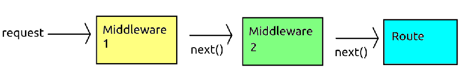

So far, we have written our Express server in one file. That is fine when the application is small, but if you need to develop a larger, more complex application, the file will quickly become hard to follow, and thus hard to maintain. We can make our code more maintainable by splitting our routes into groups, all dealing with the same type of entity (for example, songs or users), and create a separate router for each route group. To do this, though, you need to be familiar with the concept of modules, so we will cover this first.
The examples from topic 4 show a potential issue with using the Node MySQL module: it's callback based, so the code ends up relatively complex. This means that, to integrate MySQL into an Express application, you'd need to connect to MySQL first and then put your Express code in the MySQL connection callback. This makes your code perhaps rather messy and convoluted. A better approach is to create your own Node module and put the connection code in that. Here is an example:
// File - mysqlconn.js
const mysql = require('mysql2');
const con = mysql.createConnection({
host: 'localhost',
user: 'root',
database: 'mysql'});
con.connect( err=> {
if(err) {
console.log(err);
process.exit(1); // exit the server
} else {
console.log('connected to mysql ok');
}
});
module.exports = con;
Note how we have created a file mysqlconn.js which connects to
the database. Note the final line as this is key:
module.exports=con;This exports the variable con (representing the connection) to the outside world. This is how we can define a Node module; write some code and then export an object to the outside world.
To use our custom module in our Express application, we use require() in the same way that we imported third-party modules:
const con = require('./mysqlconn');
The variable con will represent our MySQL connection. Note how
it's set equal to the return value of require(); this will be
whatever was exported from our module. Also note the module name
./mysqlconn and how this corresponds to the module filename
mysqlconn.js; the ./ means the current folder.
You might be thinking that a problem with that approach is: if the database connection is asynchronous, what if a user tries to do a query before the connection has succeeded? You need to remember, though, that the Express server is running continuously, and the connection will be made as soon as the Express server starts up (which will only happen if the server admin needs to shut down and restart the server for any reason) and a user would literally have to make a request in the first two or three seconds of the server running for this error to occur.
In a larger application, you will quickly find that your main Express file (often app.js) will become very large, handling a large number of routes. What you can do instead is to define a Router. A router allows you to set up a group of routes which match a particular path. For example we might create a router matching the path /products which will handle any routes beginning with /products, e.g: /products/all, /products/id/:id and so on. To do this we create a routes folder within the folder containing our main Express server, and place a route handler in there, which would be saved as a Node module. Here is an example router module (product.js) which we would save in our routes folder:
const express = require('express');
// song.js
const productRouter = express.Router();
productRouter.get('/all', (req,res)=> {
// code to return all products
});
productRouter.get('/id/:id', (req,res)=> {
// code to find the product with the given ID
});
module.exports = productRouter; // export the module for external use
Then, in your main Express app, you could use the router as
follows:
const express = require('express');
const app = express();
// Import our product router module which we created above
const productRouter = require('./routes/product');
// Tell the app to use productRouter for all routes beginning with /producs
// As we are using "use()", the router is acting as a middleware - see below
app.use('/products', productRouter);
app.listen(3000);
So the song router is imported from the routes/product module
(corresponding to routes/product.js) and then we call use()
with two arguments:
/products;/products/all will be handled via the product
router (as the route begins with /products) and then via the /all route within the products router.
Express uses the concept of middleware. Middleware in the context of web APIs consists of code which runs before a request is handled, which can modify the req and res objects. It is typically used to prepare the request before it's handled, or intercept requests to perform operations such as logging. The body-parser, which you have already seen, is actually middleware. It parses the body of the incoming HTTP request and adds a body property to the req object allowing you to easily access POST data. Without the middleware, the body property of req would not exist.
Middleware is included with the use() method of your app
object, or with get() and post() if you only want a certain piece of middleware to run with GET and POST requests, respectively. Revisiting the use of body-parser, note how it is included with use():
app.use(bodyParser.json());
THe above example showed how you can use in-built or third-party middleware with Express. However, you will frequently want to write your own middleware. A piece of middleware is simply a function which takes three parameters - described below - and can examine the request or modify the request and/or the response. The three parameters taken by a middleware function are:
req);res);next).use() it from our Express application object.
Here is a simple example of a middleware that will run on any request. This will simply log the time of any request.
const express = require('express');
const app = express();
app.use( (req,res,next) => {
console.log(`Received a request at ${Date.now()} milliseconds.`);
next();
});
app.get('/', (req,res) => {
res.send(`Hello world!`);
});
app.listen(3000);
Note how use() expects a function which takes request and response
as parameters, the same as the route handlers, as well as next. This example writes a message to the console informing the user of the time of the request.
Notice the call to the next(); function (also passed as a
parameter to use()). This calls the next function in the middleware chain.
What do we mean by this? It is important to note that we can specify multiple items of middleware via multiple use() calls. Each item of middleware is called in the order it is specified, as long as next() is called from the previous item. So, if another middleware function is specified after this one, it will be called with next(). If there is no middleware after this one, the route handler itself will be called with next().
The diagram below shows how the request can pass through multiple items of
middleware before reaching the route handler:

Here is a second example (snippet only, not the whole server) which adds a CORS header to all responses to allow clients from any domain to connect. In this example, the middleware will be added as a custom function which will allow any client to connect to this server.
app.use((req, res, next) => {
res.set('Access-Control-Allow-Origin', '*');
next();
}
Note how we specify a custom arrow function as the argument to use(). This is our middleware, and you can see that it takes req, res and next parameters as described above. Note how our midleware adds the CORS Access-Control-Allow-Origin header to the response object to allow any domain to connect, and then calls the next function in the middleware chain with next().
Furthermore, we can write the middleware as a separate function, rather than an arrow function, as long as it has the required req, res and next parameters. The advantage of this method is that your function can be placed inside a module and imported into other projects. Here is an example of writing our CORS middleware as a separate function in a module:
// corsMiddleware.js
function corsMiddleware(req, res, next) {
res.set('Access-Control-Allow-Origin', '*');
next();
}
module.exports = corsMiddleware;
We could then require() this from our main server, and use() it, as follows:
const express = require('express');
const app = express();
// Require the middleware module
const corsMiddleware = require('./corsMiddleware');
// use() it
app.use(corsMiddleware);
// Routes
app.get('/', ...);
// etc
app.listen(3000);
We can use routes to specify that a given middleware will only run before handling a particular route. This can be useful as, we might want certain middleware to only run in response to certain requests. We do this by supplying an optional first argument to use() to specify which routes will run this middleware. For example, the middleware below (showing the time of the request once again) will only run with a route of search followed by a search term:
const express = require('express');
const app = express();
// Note that middleware only runs with /search/:query route
app.use( '/search/:query', (req,res,next) => {
console.log(`Received a request for /search at ${Date.now()} milliseconds.`);
next();
});
// Middleware not called
app.get('/', (req,res) => {
res.send(`Hello world!`);
});
// Middleware called
app.get('/search/:query', (req,res) => {
res.send(`Searching for ${req.params.query}...`);
});
app.listen(3000);
Furthermore, we can specify that middleware will only run for specific HTTP methods (GET, POST, DELETE, etc). We do this by replacing use() with a function representing the HTTP method (get(), post() etc). A good real-world use of this would be to prevent access to routes which modify data (POST, DELETE, PUT) unless you're logged in. For example:
const express = require('express');
const app = express();
// This middleware will only run with POST requests, due to the use of
// app.post() rather than app.use()
// * means 'match all', so this middleware will run with all POST requests
app.post( '*', (req,res,next) => {
console.log(`Received a POST request at ${Date.now()} milliseconds.`);
next();
});
// Middleware not called
app.get('/', (req,res) => {
res.send(`Hello world!`);
});
// Middleware called, because it uses post()
app.post('/product/new', (req,res) => {
// Code to add a product to the database
});
app.listen(3000);
As implied in the previous section, you can use middleware to prevent the route ever being called under certain conditions. A good example would be to implement a check that the user is logged in before they can access certain sensitive routes. You can prevent access to given routes by only calling next() if a certain condition is met, otherwise you send back a response (from the middleware) indicating that the main route cannot be processed. In the example below, the middleware handling the /christmasSurprise route tests whether it's December. If it is, then the /christmasSurprise route is called with next(). if not, the user is told to come back when it's Christmas!
const express = require('express');
const app = express();
// Christmas checker middleware: is it December?
app.use('/christmasSurprise', (req, res, next) => {
// Create an object representing today's date
const d = new Date();
// Get the current month, note that d.getMonth() gives a month in the range
// 0-11 so we have to add one to get the normal numbering (1-12)
const month = d.getMonth() + 1;
// If it's December, let the client access the route
if (month == 12) {
next();
// If not, tell them to come back later!
} else {
res.send(`It's not Christmas yet, come back in ${12 - month} months!`);
}
});
// Christmas surprise route, "guarded" by the middleware above
app.get('/christmasSurprise', (req, res) => {
const html = "<h1>HERE IS YOUR CHRISTMAS SURPRISE!</h1> ... etc ...";
res.send(html);
});
app.listen(3000);
Finally this week we will cover a useful Node module, dotenv. The dotenv module allows developers to specify environment variables - variables which can be set by the user as input to the application and may change - within a file, .env. This is quite easy to use. Firsst of all, as it's a third-party module, you have to install it:
npm install dotenvYou then
require() it, for example below we import dotenv after we have initialised our Express app object.
const express = require('express');
const app = express();
require('dotenv').config();
Environment variables are placed within the .env file as a series of key/value pairs. For example, here is a .env file containing database settings:
DB_HOST=localhost DB_USER=root DB_DBASE=mysqlWe could then use these in our server via the
process.env object. So we could use process.env.DB_USER to access the database user, process.env.DB_HOST to access the machine running the database, and process.env.DB_DBASE to access the database name. For example:
const con = mysql.createConnection({
host: process.env.DB_HOST,
user: process.env.DB_USER,
database: process.env.DB_DBASE
});
It's important to understand that you can only use process.env after you have imported dotenv, as shown above.
The exercise will allow you to practise with routers, middleware and dotenv.
require() it from the new copy of your server.ht_users table with data about users. Download it and import it into your database.users.js, should create an express.Router() as shown in the second example, and should contain two routes relating to users. These should be:
/allUsers route which returns details of all users as JSON; /user/:username route which returns details of a specific user, identified by username./users, as shown in the example.songs.js. In the same way that you did for your users router, include this router under the top-level route /songs, and test it by searching for all songs by a particular artist by requesting the correct URL in your browser.dotenv and require() it in your main server application. Add middleware to your server so that any POST request can only be accessed if the environment variable process.env.APP_USER exists. (This is a way of simulating a user being logged in without writing a full login system, which we have not done yet). To test whether process.env.username exists we can test whether it's undefined:
if(process.env.APP_USER === undefined) {
// process.env.APP_USER does not exist (it's undefined)
// Return a 401 (Unauthorized) HTTP code, with a JSON error message
res.status(401).json({error: "You're not logged in. Go away!"});
} else {
// username exists, carry on...
}
Test this out by first trying to access a POST route without creating a .env file. Test this out in RESTer; you should get a 401 error and the "Go away" message as a response. Then, create a .env file with a username environment variable. The username can be anything, for example:
APP_USER=AdamAdamsYou should now be able to access your POST route.
require() it and use() it in the main server file by specifying the name of the function exported from the module./users group of routes (see Question 3) unless the username exists. Use the same middleware for this./users group of routes is requested, the middleware checks that the APP_USER username is actually in the database and that the value of the isadmin column of this user is 1. In this way, only admin users can access the /users routes which, for data protection reasons, is probably a good idea!